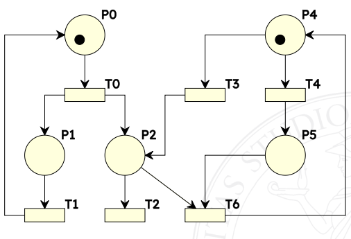
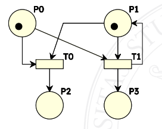
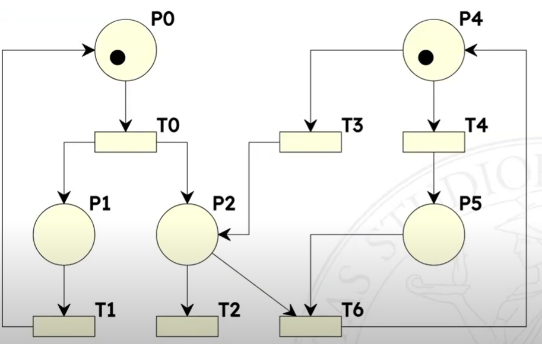
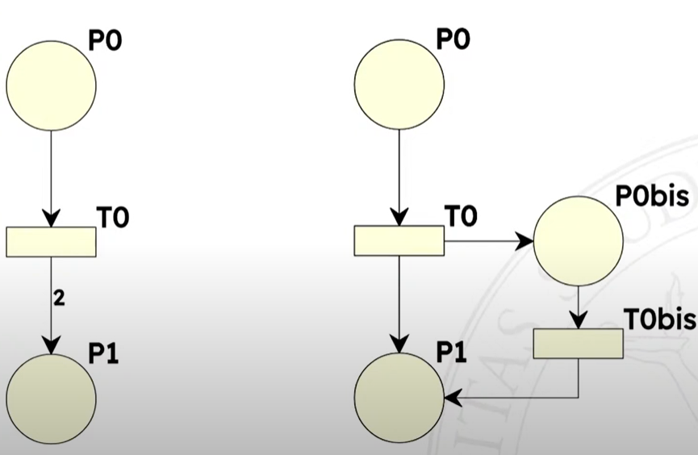

Petri nets
Nascono per descrivere sistemi concorrenti.
Tool
https://homes.di.unimi.it/bellettini/pnexec/
- https://github.com/sarahtattersall/PIPE
- quello che uso negli iframe piu’ sotto
- https://petri.hp102.ru/pnet.html
Note sulla sintassi
Marcatura: distribuzione dei token sui posti, piu’ formalmente e’ una funzione che assegna un intero non negativo ad ogni posto della rete M(p): numero di gettoni in Posto p per Marcatura M Scatto: M[t1 > M′ M abilita t1: M[t1> I preset pre(t) sono i posti connessi alle transizioni, i postset pos(t) sono i posti connessi dalle transizioni.
Differenza con FSM
- stato non e’ a livello di sistema, ma come composizione di stati parziali
- transizioni sono promosse a nodi (non piu’ archi), si limitano a modificare una parte dello stato globale
Definizione formale
E’ una 5-upla [P, T; F, W, M0]
- P insieme dei posti
- T insieme delle transizioni
- F relazione di flusso - F ⊆ (P × T) ∪ (T × P)
- W la funzione peso (codominio senza 0) - $W : F \rightarrow \\N^{+}$
- M0 la funzione marcatura (iniziale) - $M_0 : P \rightarrow \\N$
P ∪ T non puo’ essere vuoto P ∩ T e’ vuoto
pre(a) = d ∈ (P ∪ T) | ⟨d, a⟩ ∈ F post(a) = d ∈ (P ∪ T) | ⟨a, d⟩ ∈ F
Quindi i preset sono i posti connessi alle transizioni, i postset sono i posti connessi dalle transizioni.
Definizione di M'
Notazione: ∀p ∈ pre(t) \ post(t) significa “per tutti i posti che appartengono al preset di t ma non appartengono al postset di t”
W(⟨p, t⟩) numero di gettoni nell’arco
$$ \begin{align} &\forall p \in pre(t) \setminus post(t) &\qquad M'(p) &= M(p) - W(\langle p,t \rangle) \\ &\forall p \in post(t) \setminus pre(t) &\qquad M'(p) &= M(p) + W(\langle t,p \rangle) \\ &\forall p \in post(t) \cap pre(t) &\qquad M'(p) &= M(p) - W(\langle p,t \rangle) + W(\langle t,p \rangle) \\ &\forall p \in P \setminus (pre(t) \cup post(t)) &\qquad M'(p) &= M(p) \end{align} $$
Grazie all’ultima e’ possibile fare una analisi locale.
Esempio di rete
Sono composte da
- posti - cerchi - di solito vengono usati nomi per descriverli
- token - assegnati a vari posti
- transizioni - rettangoli - di solito verbi che modificano lo stato
- archi - connettono posti a transizioni, transizioni a posti
Token
Posso assegnare piu’ token per lo stesso posto, il numero di token puo’ quindi rappresentare il numero di istanze di quel tipo di posto. I token non si spostano, i token si creano e si distruggono!
Ad esempio “tre robot che producono un certo manufatto”.
Se non c’e’ un limite imposto dalle logiche di transizione un posto puo’ accettare infiniti token. Cosa che con una FSM non posso modellare.
Transizioni
Collegati a certi eventi, scattano quando sussitono certe condizioni, se hanno abbastanza gettoni nei posti di ingresso
Una transizione e’ abilitata ad evolvere quando
t ∈ T e’ abilitata in M se e solo se ∀p ∈ pre(t) M(p) ≥ W(⟨p, t⟩)
(questo vuol dire che se una transizione non ha un Posto prima di essa e’ abilitata a scattare) Lo scatto di una transizione t in una marcatura M produce una nuova marcatura M′.
Ci puo’ essere una sola transizione alla volta. Se ci sono piu’ transizioni abilitate non posso dire quale deve scattare, sono tutte equiprobabili.
Esempi di transizioni
Discorsivamente: una transizione e’ abilitata ad evolvere se il numero di token nei posti di input e’ maggiore o uguale ai pesi degli archi connessi.
Relazione di sequenza
Una transizione t1 e’ in sequenza con una transizione t2 in una marcatura M se e solo se
M[t1 > ∧¬M[t2 > ∧M[t1t2>
O piu’ umanamente: * t1 e’ abilitata in M * t2 non e’ abilitata in M * t2 e’ abilitata nella marcatura M′ prodotta dallo scatto M[t1 > M′
Nel seguente esempio T0 e T1, T0 e T2, T3 e T2

T0 e T6 no perche’ T6 necessita di un token in P5, che manca. T1 e T0 no perche’ T1 non e’ abilitata.
Nota che se una transizione e’ in sequenza con un’altra dipende dalla situazione attuale.
Relazione di conflitto
Due transizioni t1 e t2 sono in conflitto
- strutturale (dipende dalla topologia della rete non dalla marcatura) se e solo se pre(t1) ∩ pre(t2) ≠ ∅
- effettivo in una marcatura M se e solo se:
- riguardo il preset M[T1> ∧ M[t2> ∧ ∃p ∈ pre(t1) ∩ pre(t2) M(p) < W(⟨p, t1⟩) + W(⟨p, t2⟩) “esiste un posto p in ingresso a entrambe le transizioni che non ha abbastanza token per farle scattare entrambe”
- riguardo il postset M[t1 > ∧M[t2 > ∧¬M[t1t2>

Conflitto effettivo condizione sufficiente perche’ ci sia quello strutturale. Conflitto strutturale condizione necessaria perche’ ci sia quello effettivo.
Le due transizioni sono in conflitto * strutturale perche’ hanno posti in comune * effettivo perche’ P1 non ha sufficenti gettoni per farle scattare entrambe, P0 si; basta che ce ne sia uno di posto che non riesce a soddisfare le esigenze. Se facessi scattare prima T1 non ci sarebbe il conflitto effettivo.
E’ possibile far scattare due transizioni assieme, purche’ ci siano sufficienti Token.
Esempio di conflitti
Quali sono i conflitti qua?

- strutturali
- t3 e t4
- t2 e t6
- effettivi
- t3 e t4
Concorrenza
La si puo’ pensare come la relazione opposta alla relazione di conflitto.
Due transizioni t1 e t2 sono in concorrenza
- strutturale se e solo se pre(t1) ∩ pre(t2) = ∅ (la negazione del conflitto)
- effettiva in una marcatura M se e solo se M[T1> ∧ M[t2> ∧ ∀p ∈ pre(t1) ∩ pre(t2) M(p) ≥ W(⟨p, t1⟩) + W(⟨p, t2⟩)
Vale a dire: “tutti i posti in ingresso a entrambe le transizioni hanno abbastanza token per farle scattare entrambe”
Archi
Possono avere un peso, quindi posso esprimere situazioni concorrenti. Se non scrivo nulla vuol dire peso 1.
Un arco in entrata di una transizione, e’ un requirement. Un arco in uscita da una transizione, crea dei token.
Insieme di raggiungibilita’
R e’ l’insieme di raggiungibilita’, che e’ il piu’ piccolo insieme di marcature tale che:
- M ∈ R(P/T, M)
P/T sono le Reti di Petri fin qua viste (Posti Transizioni) - (M′ ∈ R(P/T, M) ∧ ∃t ∈ T M′[t > M″) ⟹ M″ ∈ R(P/T, M)
Tutte le marcature raggiungibili da una corretta play della Rete di Petri.
Proprieta’ di limitatezza
P/T con Marcatura M si dice limitata se e solo se
∃k ∈ ℕ ∀M′ ∈ R(P/T, M) ∀p ∈ P M′(p) ≤ k
Cioe’ se riesco a fissare un numero massimo di Token per ognuno dei Posti. La cardinalita’ dell’insieme di raggiungibilita’ e’ infinito oppure no?
Legame con automi a stati finiti
Se la rete di Petri e’ limitata, allora l’insieme di raggiungibilita’ finito, allora esiste un automa a stati finiti corrispondente che ne descrive il comportamento.
Gli stati sono le possibili marcature dell’insieme di raggiungibilita’.
Vitalita’ di una transizione
Una transizione t in una Marcatura M si dice viva.
Una rete si dice viva se tutte le sue transizioni sono vive.
Grado 0 - morta
Non e’ abilitata in M e in nessuna delle Marcature raggiungibili da M allora
∀M′ ∈ R(P/T, M) ¬M′[t>
Non sono piu’ capace di far scattare una transizione.
Esempio: se c’e’ una transizione che rappresenta lo scoppio di una centrale nucleare, il fatto che la transizione sia dimostrabile che e’ morta e’ una cosa molto piacevole. La centrale non puo’ esplodere per il motivo rappresentato dalla transizione.
Grado 1
Esiste almeno una Marcatura raggiungibile da M in cui t e’ abilitata
∃M′ ∈ R(P/T, M) M[t>
Posso essere in grado di spegnere la centrale nucleare in maniera sicura.
Grado 2
Per ogni numero k (quindi grande a piacere) esiste almeno una sequenza di scatti ammissibile da M in cui la transizione t scatta k volte
∀k ∈ ℕ M[..t ..t1 ..tk − 1 ..tk>
Grado 3
Esiste almeno una sequenza ammissibile da M in cui la transizione t scatta infinite volte.
Grado 4 - viva
In qualunque Marcatura raggiungibile da M, t non e’ morta
∀M′ ∈ R(P/T, M) ∃M″ ∈ R(P/T, M′) M″[t>
Esempi

T0 Morta T1 Grado 1 
T3 Grado 3 
T2 Grado 2, perche’
posso farla scattare quante volte voglio, ma ad un certo punto devo
fermarmi: non va avanti da sola 
Estensioni
Capacita’ dei posti
Posso fissare un massimo numero di Token ammissibili per un Posto. La regola di abilitazione cambia con una aggiunta:
- ∀p ∈ pre(t) M(p) ≥ W(⟨p, t⟩) (preesistente)
- ∀p ∈ post(t) M(p) + W(⟨t, p⟩) ≤ K(p)
Dove K(p) e’ la capacita’ di p.
Posto complementare
Un posto pc si dice complementare rispetto ad un posto p quando ha archi di pari peso verso le stesse transizioni di p, ma con verso opposto.
Grazie ai posti complementari “reti con capacita’ di posti possono essere tradotte in rete senza capacita’ di posti” senza complicare troppo la cosa.
∀t ∈ pre(p) ∃⟨pc, t⟩ ∈ F W(⟨pc, t⟩) = W(⟨t, p⟩)
∀t ∈ post(p) ∃⟨t, pc⟩ ∈ F W(⟨t, pc⟩) = W(⟨p, t⟩)

Algoritmo per l’introduzione di un posto complementare:
- aggiungere il posto complementare (o piu’ di uno come nell’esempio)
- la marcatura iniziale e’ (ad esempio per p1) M′0(p′1) = K(p1) − M0(p1) = 2 − 1 = 1
- si aggiungono gli archi verso le direzioni opposte nelle transizioni interessate
Archi inibitori
A differenza dei normali archi, gli archi inibitori richiedono la mancanza di gettoni in un posto perche’ la transizione sia abilitata.
In caso di rete limitata la potenza espressiva di una rete che sfrutta gli archi inibitori non cambia, perche’ esistendo un limite massimo di gettoni k all’interno della rete e’ sufficiente creare un posto complementare a p detto pc tale che
M(p) + M(pc) < k
Rete pura
Una rete e’ detta pura se ∀t ∈ T pre(t) ∩ post(t) = ∅
Il vantaggio di una rete pura e’ la semplicita’ di lettura che si ottiene, perche’ non avendo archi da e verso la stessa transizione viene piu’ semplice ragionare
- su regole di scatto
- sull’ambiguita’ di cio’ che si sta osservando
- ci sono problemi nell’implementazione di archi inibitori
Nel caso di un rete non pura la regola per lo scatto di una transizione cambia: devono essere considerati anche i posti nel postset che sono anche nel preset.
Eliminare i pesi degli archi
Per semplificare la rete.
Creo un nuovo Posto e una nuova Transizione.

ESPANDERE Boh? Non ho capito nulla.
E S P A N D E R E
Albero di raggiungibilita’
“Come faccio a verificare se le proprieta’ che desidero siano verificate?” “Genero l’albero di raggiungibilita’”
Algoritmo per la generazione
ESPANERE
Copribilita’
Una Marcatura M copre una Marcatura M′ (M′ e’ coperta da M) se e solo se: ∀p ∈ P M(p) ≥ M′(p)
Una Marcatura M e’ detta copribile a partire da una marcatura M′ se esiste una marcatura M″ ∈ R(P/T, M′) che copre M.
“Ho piu’ gettoni posto per posto”. Copre in maniera propria se M(p) > M′(p)
E’ utile perche’ se M e’ la marcatura minima per abilitare t
∀p ∈ pre(t) M(p) = W(⟨p, t⟩) e ∀p ∈ P \ pre(t) M(p) = 0
allora la transizione t e’ morta se e solo se M non e’ copribile a partire dalla Marcatura corrente.